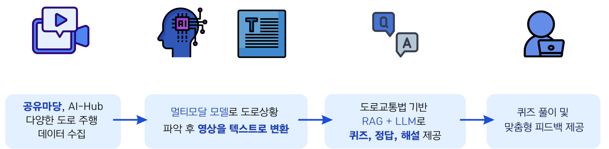
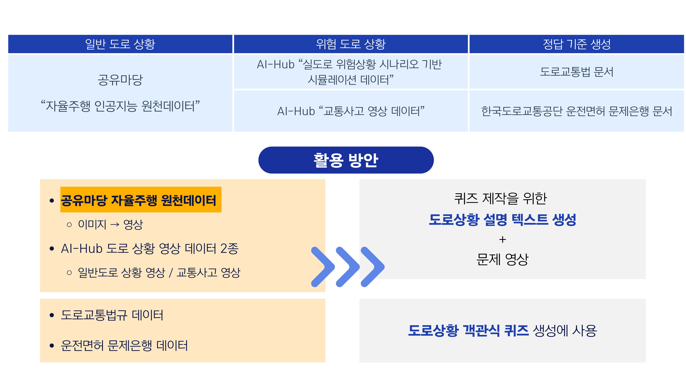
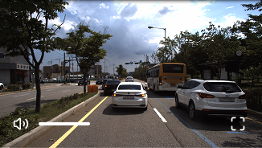
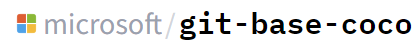
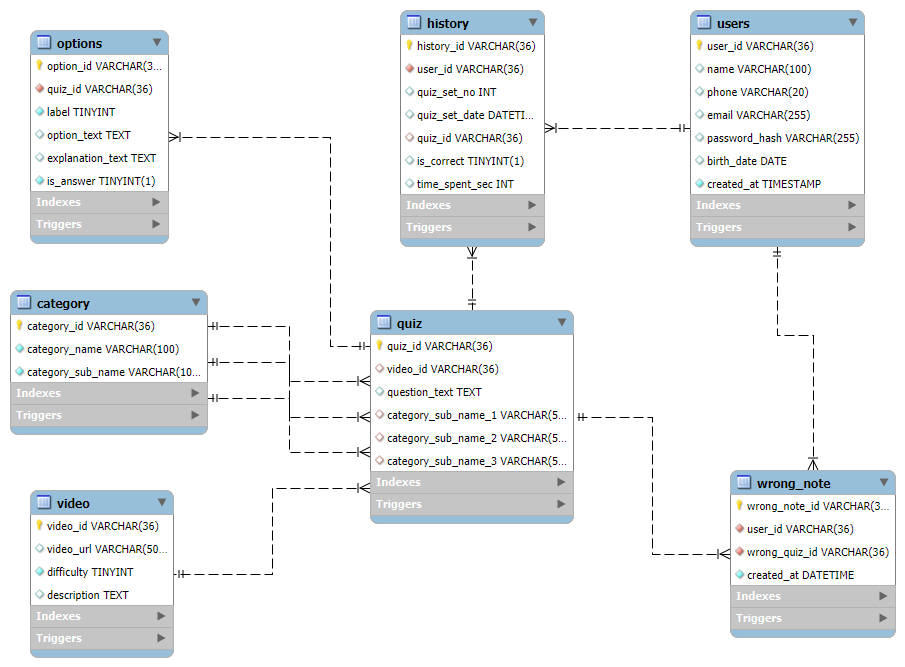

AI-GO(아이고)
고령운전자를 위한AI 기반 도로상황 퀴즈 생성 서비스
📍 이번 도로 위험 보호구역 퀴즈
영상을 보고 올바른 답을 선택하세요
문제를 선택하세요:
💡 AI가 실시간 도로 상황을 분석하여 퀴즈를 생성합니다
프로젝트 개요
AI-Go란?
실제 도로 주행 영상을 분석해 다양한 교통 상황을 텍스트로 구조화하고,
이를 바탕으로 상황형 퀴즈와 해설을 자동 생성하여
고령운전자의 법규 이해도와와 위험 대응 능력을 체계적으로 향상시키는
교통안전 학습 서비스입니다.
문제 상황
- 고령운전자 교통사고 발생 건수 4년간 36.4% 급증, 전체 교통사고의 21.6%를 차지 (2020-2024)

- 법규위반 및 교통사고와 높은 상관성을 가지는 위험행동율이 높은 고령 운전자

- 면허반납제, 자격시험강화는 통제중심의 정책 → 고령자의 이동권 문제와 교육 부재를 해결 못함

- 고령운전자의 사고율 감소를 위해 자진 반납 및 면허 갱신 제도 등이 시행 중이나, 반납률이 낮고 실효성 부족

고령자의 자율성과 안전을 모두 확보하는 교육 중심 솔루션 필요
AI-Go
- AI가 도로 영상 → 상황 설명 자동 생성
- 도로교통법 기반 퀴즈 자동 생성 (RAG)
- 사용자 맞춤형 학습 분석 제공
- 영상 기반 실전형 교육 콘텐츠 제공
법규 이해 · 상황 인지 · 안전 대응 능력을 강화시켜
고령운전자 교통사고율 감소 효과

서비스 흐름

Data

나의 역할
My Contribution
AI Learning System Architect
데이터 설계 및 전처리
공공 데이터 정제 · 흐름 설계 · 카테고리 체계화
공공 데이터 정제
- •공유마당 / AI-Hub 도로 주행 영상 정제
- •전방(Front View) 영상만 선별 사용
- •트라우마 유발 가능 고강도 사고 영상 필터링
- •난이도 라벨링 (초 / 중 / 고)



데이터 흐름 설계
- •Video → Description → Law Article → Quiz 생성 구조 정의
- •단계별 메타데이터 설계 및 라벨링 체계 구축
도로 상황 카테고리 체계화
- •법규 기반 재분류 체계 설계
-> 학습 분석 중심 카테고리 구조 설계
VLM 모델 테스트 : 영상 -> 텍스트 변환
모델 실험 · 한계 분석 · 프롬프트 엔지니어링
VLM 모델 실험 및 검증
- •다수 모델 비교 테스트
- •Hugging Face 기반 GIT 모델 담당
- •FPS / 프레임 수 조정 → 시간 왜곡 문제 개선
- •주요 장면 균형 샘플링 설계

모델 한계 분석 및 기각
- •주변 물체 인식 중심 서술
- •도로 상황 맥락 이해 부족
→ 서비스 부적합 판단
프롬프트 엔지니어링
- •Few-shot 적용
- •Markdown 구조화
- •반복 문장 / 사실 왜곡 개선
-> 시간 순서 기반 상황 설명 안정화
RAG + GPT-OSS 문제 생성 시스템 설계
법 조항 기반 RAG · 문제 생성 파이프라인 · 검색 품질 개선
법 조항 기반 RAG 구조
- •"제XX조" 단위 청킹
- •FAISS 벡터 DB 구축
- •생성 시간 단축 (처리속도 1.5배 향상)
- •MMR → Similarity 검색 방식 전환
문제 생성 파이프라인
- •상황 설명 → 4지선다 생성
- •법 조항 기반 해설 자동 생성
- •Ollama GPT-OSS 활용
- •Temperature 조절 → 정확도/설명력 제어
검색 품질 개선
- •FAISS + BM25 앙상블 리트리버
- •LLM 기반 중요 키워드 추출
- •연관(꼬리) 문제 검색 로직 구현
유사도 3 : 키워드 7 비율
프롬프트 안정화
- •Few-shot + Markdown 구조화
- •호출 시 인스턴스 재생성
- •캐싱 문제 해결 → 출력 일관성 확보
-> 법 조항 정합성 중심 문제 생성 시스템 설계
MariaDB 기반 DB 설계
스키마 설계 · 성능 최적화
데이터 모델링 & 키 설계
- •서비스 전체 ERD 설계
- •PK / FK 관계 정의 및 참조 무결성 확보
- •Video–Quiz–Options–History–WrongNote 구조 설계
- •분석 최적화를 고려한 키 및 인덱스 설계
-> 학습 흐름 중심 관계형 구조 설계
SQL & Trigger 기반 로직 구현
- •JOIN 기반 영상·퀴즈·해설 통합 조회 쿼리 작성
- •사용자 정답률 / 카테고리 분석 집계 쿼리 설계
- •Trigger를 활용한 풀이 기록 자동 업데이트
- •오답노트 자동 생성 로직 구현
-> DB 레벨 자동화 및 분석 중심 쿼리 설계
협업 배포
- •전체 스키마 SQL 배포 파일 작성
- •팀원 DB 동기화 스크립트 구현
-> 운영 및 협업을 고려한 DB 환경 구축

5️⃣ 사용자 맞춤 학습 분석 로직
분석 알고리즘 · 피드백 자동 생성
📌 분석 알고리즘
- •전체 정답률 계산
- •카테고리별 강·약점 분석
- •주차별 개선도 산출
📌 피드백 자동 생성
- •분석 결과 → GPT-OSS 텍스트 생성
- •사용자 수준별 학습 방향 제시
👉 행동 유도형 데이터 기반 피드백 시스템
6️⃣ 웹 서비스 UI/UX 설계
Figma · IA 설계 · 퀴즈 UX
- •Figma 기반 화면 설계
- •사용자 흐름 중심 IA 설계
- •Cursor 활용 코드 서빙
- •영상 기반 퀴즈 UX 최적화
7️⃣ 문서화 및 시스템 정리
ERD · 요구사항 · 시연 영상
- •비즈니스 로직 정의
- •ERD 설계
- •요구사항 정의서
- •모델 정의서
- •기능 시연 영상 제작
💡 README에는 팀 단위로 작성되어 있지만, 포트폴리오에서는 "내가 한 것만 분리"하여 명확히 제시
모델 설계 상세
🤖 AI Pipeline
Qwen VL
Vision-Language 모델
역할: 영상 → 상황 설명 스크립트 생성
도로 주행 영상으로부터 스크립트, 도로 상황을 정확하게 설명하는 텍스트를 도출
GPT-OSS + RAG
법령 데이터 벡터화 및 검색
1. 법령 데이터 벡터화
도로교통법을 FAISS 기반으로 벡터화
2. 상황 매핑
Qwen이 생성한 상황 설명과 관련된 법령 조항 자동 매핑
3. 퀴즈 생성
4지선다 객관식 문제 자동 생성
LTX-Video
AI 기반 영상 생성
역할: 이미지를 도로주행 영상으로 확장
공유마당 도로주행 이미지 → 영상 확장하여 퀴즈 비디오 생성
데이터 설계
🗂 DB 설계 구조
User
사용자 정보
Quiz
퀴즈 데이터
Law Mapping
법령 매핑
Quiz Result
퀴즈 결과
Insight Log
분석 로그
Index
성능 최적화
📊 ERD 다이어그램
ERD 이미지 삽입 영역
서비스 화면
📱 주요 화면
퀴즈 화면
영상 기반 인터랙티브 퀴즈
UI 스크린샷 영역
결과 화면
점수 및 정답률 표시
UI 스크린샷 영역
오답노트
틀린 문제 복습 기능
UI 스크린샷 영역
학습 분석 대시보드
사용자 맞춤 인사이트
UI 스크린샷 영역
💡 UI는 "보여주기용"이고, 설명은 "로직 중심"으로 작성
성능 평가
📈 Performance
89%
영상 설명 정확도
Qwen VL 모델 성능
A+
문제 생성 품질
시험자 테스트 결과
4.5/5
사용자 만족도
테스트 참가자 평가
기술적 도전과 해결
💡 차별화 포인트
💼 이걸 쓰면 "진짜 개발자"로 보입니다
결과 및 확장성
🏆 프로젝트 결과
- 공모전 제출 완료
- 서비스 프로토타입 완성
- AI 기반 학습 자동화 검증
🚀 확장 가능성
- 보험사 안전교육
- 시뮬레이션 운전 교육
- 자율주행 데이터 학습 보조
팀원 소개
더 알아보기
GitHub 코드와 상세 문서를 확인하세요